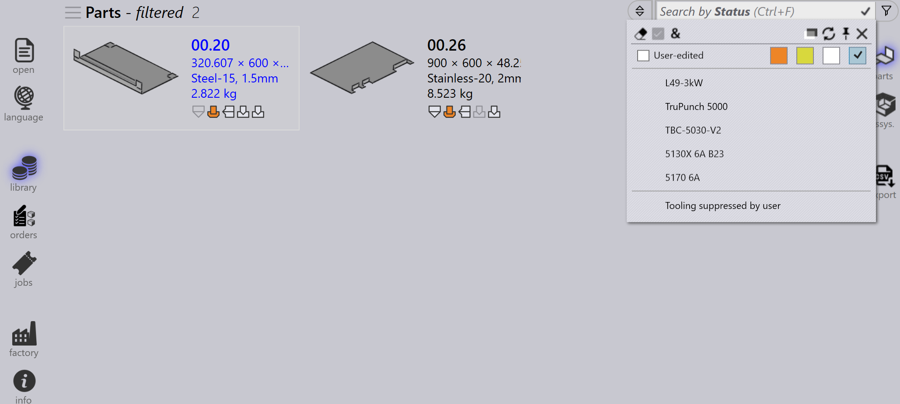

Dele filtre
Delebiblioteks-filtrene lader Dem hurtigt søge efter og finde dele i biblioteket ved at anvende specifikke betingelser. Ved at indsnævre resultaterne til kun de dele, der opfylder Deres kriterier, gør disse filtre det nemmere at administrere og få adgang til relevante dele effektivt.

Status
-
Brug Status filtret til at søge dele baseret på værktøjsstatus.
-
Rullemenuen viser værktøjstilstande som farvede bokse og alle tilgængelige maskiner og deres relevante fejl.
-
De farvede bokse repræsenterer følgende tilstande:
-
Hvid: Værktøj OK
-
Orange: Værktøj har fejl
-
Gul: Værktøj har advarsel
-
Grå: Værktøj undertrykt
-
-
Hvis en del har narrow flange eller tooling not assigned fejl, vil valg af disse vise de respektive dele.

-
Dele med undertrykt værktøj på den valgte maskine vises ved at klikke på den grå farvede boks.

Bukningsmonteringer
-
Brug Bukningsmonteringer filtret til at søge dele baseret på det anvendte bukkeværktøj.
-
Rullemenuen viser alle tilgængelige bukkeværktøjer og kan filtreres efter værktøjsnavn, type (punch, gooseneck, radius osv.) eller beskrivelse.
-
Vælg flere værktøjer og klik på Match alle|&** for at sortere de værktøjer, der bruger begge de valgte værktøjer.

Brugte værktøjer
-
Filtrering efter Brugte værktøjer fungerer på samme måde som filtrering efter Bukningsmonteringer.
-
Værktøjsikoner vises i proportionale størrelser (ikke nøjagtige, men relative).
-
Når værktøjsforhåndsvisningen er åben, fremhæver musemarkøren over et værktøj i filterlisten det pågældende værktøj i forhåndsvisningsruden.
-
Flere værktøjer kan vælges og anvendes ved hjælp af Match alle|&**.

Tilstand
-
Brug Tilstand filtret til at søge dele baseret på deres aktuelle tilstand.
-
Rullemenuen viser alle relevante tilstande afhængigt af de tilgængelige biblioteksdele.
-
Listen over tilstande ændres dynamisk i henhold til de valgte dele og deres status.
-
For eksempel, vælg Material Missing for at se dele i en uløst materialetilstand.